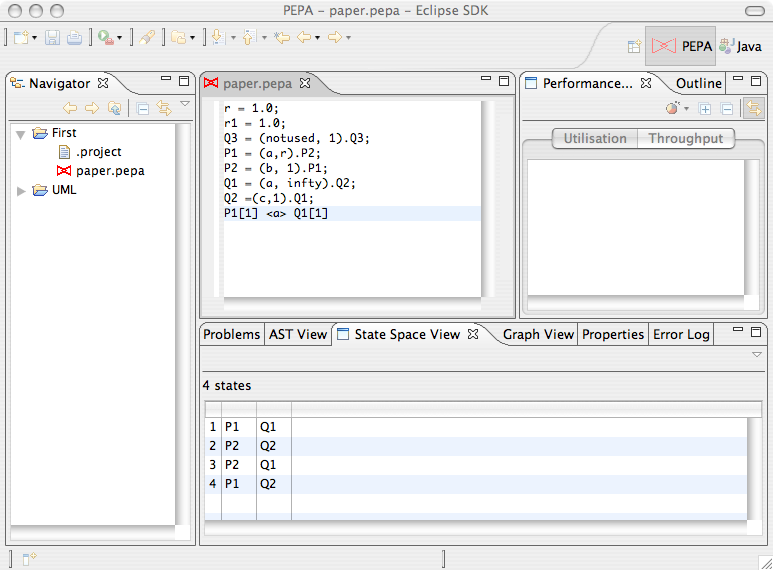

The State Space View allows you to navigate the underlying CTMC of a PEPA model. After a model is derived, the view presents a tabular representation of the state space. The first column shows the state number, then there are as many columns as the number of top-level components. An additional column shows the steady-state probability of the state after the model is solved.
